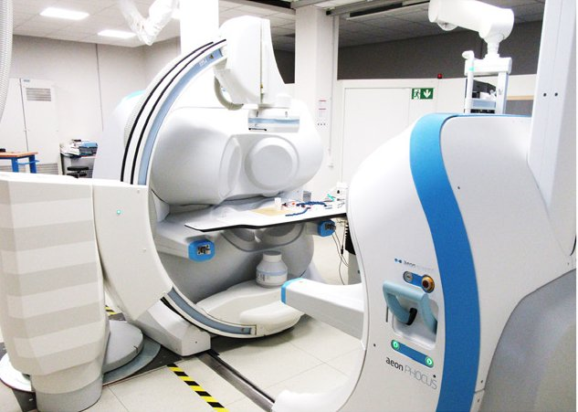

Commercial and clinical-stage systems · phocus_aeon2015
Aeon Phocus
Aeon Phocus electromagnetic catheter steering system

1 / 3


- Family
- Commercial and clinical-stage systems (magnetic-navigation)
- Devices
- magnetic ablation catheters (model N.R.); in ETH tests a tethered magnet (NdFeB, 29 mm long, 5 mm radius) and variable-stiffness magnetic catheters with LMPA segments (chautems2017_tethered Fig. 7; chautems2017_variable)
- Degrees of freedom
- 3 (alekseeva2025_design Table 14); field and field gradient from 7 electromagnets (chautems2017_tethered Sec. II)
- Push
- Magnetic
- Twist
- Field direction
- Tested up to
- Bench
- Sim-to-real
- None found — No simulation-trained controller found for this robot.
Testing
- Highest level
- Bench
- What was tested
- bench only in the sources read: tethered-magnet trajectories and force measurements inside the Aeon Phocus at Aeon's lab (chautems2017_tethered Sec. III); variable-stiffness catheter configurations in the Aeon field (chautems2017_variable Fig. 3). Clinical use is stated ('a medically certified system currently in clinical use', chautems2017_tethered abstract) but no patient study was found; alekseeva2025_design Table 14 gives 'ex vivo phantom studies (TRL3)'
- Key numbers
- 7 electromagnets; model vs measured force error below 0.01 N, nine points at 0.071 +/- 0.005 N (chautems2017_tethered Sec. III-C); field controlled closed-loop at 1 Hz in the ETH tests (chautems2017_tethered Sec. II); 100 mT used to load a VS catheter with 0.003 Nm (chautems2017_variable Sec. III)
Mechanism
- Push (translation)
- magnetic (field gradient on the tip magnet); catheter advance mechanism N.R.
- Twist (rotation)
- tip direction by field of 7 electromagnets arranged around the patient's torso (li2020_magnetic Sec. 3.4); static electromagnets (chautems2017_tethered Sec. I) vs 'movable electromagnets' (mandhumula2025_robotic): conflict
- Device range
- N.R.
- Target anatomy
- cardiac arrhythmias (catheter ablation) in all four heart chambers (chautems2017_tethered Sec. III-A)
Sensing and interface
- Force sensing
- none in the system; ETH added Hall sensors around the workspace for field correction (chautems2017_tethered Sec. II)
- Leader and haptics
- no: joystick in a separate control room (li2020_magnetic Sec. 3.4; chautems2017_tethered Sec. III-A)
- Imaging
- integrated with a Siemens Artis Zee angiography system (chautems2017_tethered Fig. 6; li2020_magnetic Sec. 3.4)
- Sterility
- N.R.
Size
- Footprint (mm)
- N.R. (encloses the patient's upper body, li2020_magnetic Fig. 6b)
- Mass (kg)
- N.R.
Simulation
- Simulation model
- none found (linear field model with saturation correction, no simulator; chautems2017_tethered Sec. II)
- Sim-trained controller
- none found
Versions
- Lineage
- single system: CE mark announced 2015-07-30 (startupticker2015_aeon); host of the ETH magnetic-catheter tests of 2017 (chautems2017_tethered, chautems2017_variable); company no longer in business (li2020_magnetic Sec. 3.4); 'discontinued despite regulatory approval' (mandhumula2025_robotic)
Sources
- The tethered magnet: Force and 5-DOF pose control for cardiac ablation · 2017 IEEE International Conference on Robotics and Automation (ICRA), 2017 · doi:10.1109/icra.2017.7989562 [chautems2017_tethered]
- A variable stiffness catheter controlled with an external magnetic field · 2017 IEEE/RSJ International Conference on Intelligent Robots and Systems (IROS), 2017 · doi:10.1109/iros.2017.8202155 [chautems2017_variable]
- Green light to Aeon Scientific to launch its Aeon Phocus · no DOI on file [startupticker2015_aeon]
- A review of magnetic actuation systems and magnetically actuated guidewire- and catheter-based microrobots for vascular interventions · Intelligent Service Robotics, 2020 · doi:10.1007/s11370-020-00311-0 [li2020_magnetic]
- Robotic Systems Design in Endovascular Treatment · IEEE Transactions on Medical Robotics and Bionics, 2024 · doi:10.1109/tmrb.2024.3377374 [li2024_design]
- Robotic Systems in Cardiovascular Interventions: Evolving Platforms and the Path Forward · Methodist DeBakey Cardiovascular Journal, 2025 · doi:10.14797/mdcvj.1652 [mandhumula2025_robotic]
- The Design of Endovascular Robots for Cardiac Interventions: A Survey · Journal of Field Robotics, 2024 · doi:10.1002/rob.22480 [alekseeva2025_design]
Notes
- Notes
- Family: commercial (A4 scope; CE-marked magnetic navigation). A4 had set it aside as EP-only; the author put it in (round 8). Nanoflex (navion_nanoflex2025) is a later, different ETH spin-off. Same ETH group tested the tethered magnet in it (review_coverage rows 'ETH_CHAUTEMS', not added here).
This record
- Read level
- full — full (chautems2017_tethered, chautems2017_variable); web (startupticker2015_aeon)
- Picture
- chautems2017_variable Fig. 1(B) (same photo as li2020_magnetic Fig. 6a) ↗ — licence: publisher copyright; grade B
- Picture changes
- native extract from chautems2017_variable-stiffness_IROS.pdf p. 1; cropped to panel B; none upscaled
- Found by
- commercial: Search of commercial and clinical-stage systems.
- Data
- JSON · YAML:
records/robots/phocus_aeon2015.yaml - Correction
- Suggest a correction [repository not created yet]